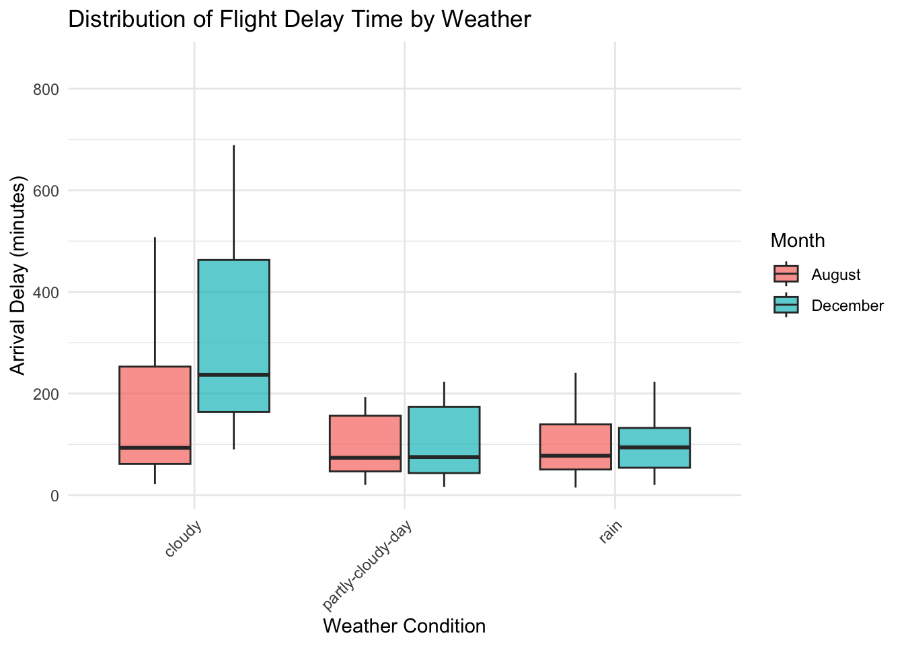
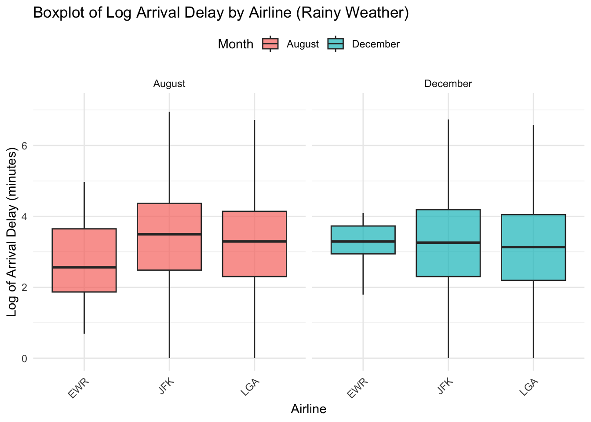
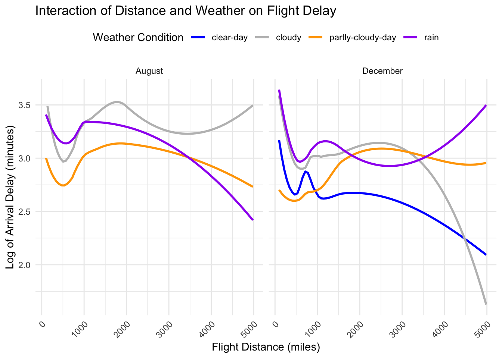
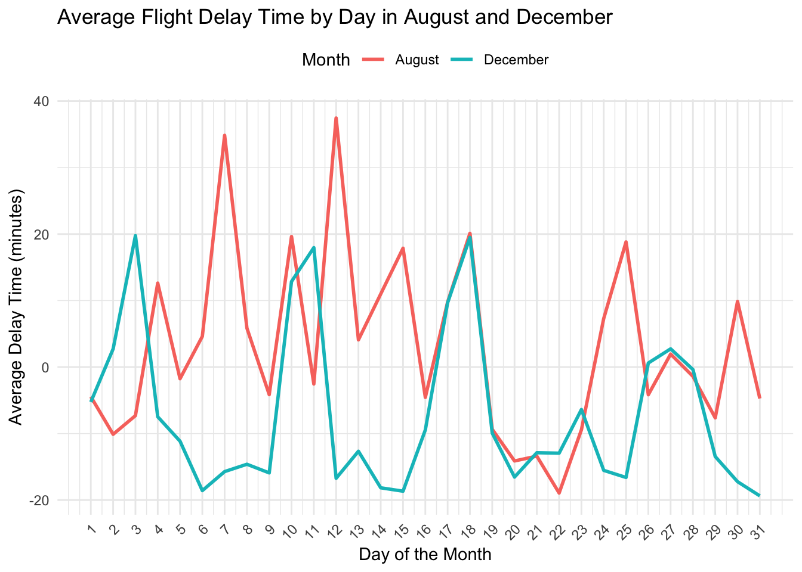
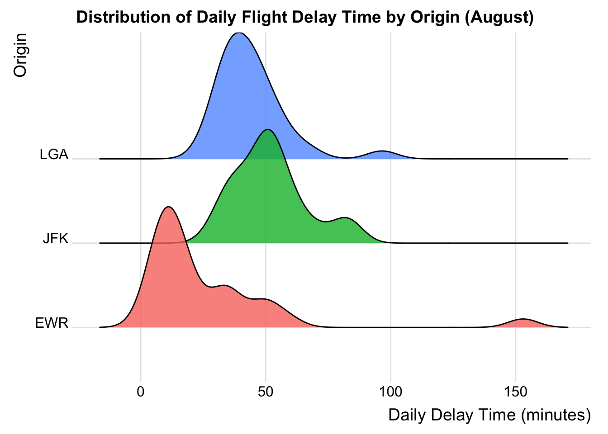
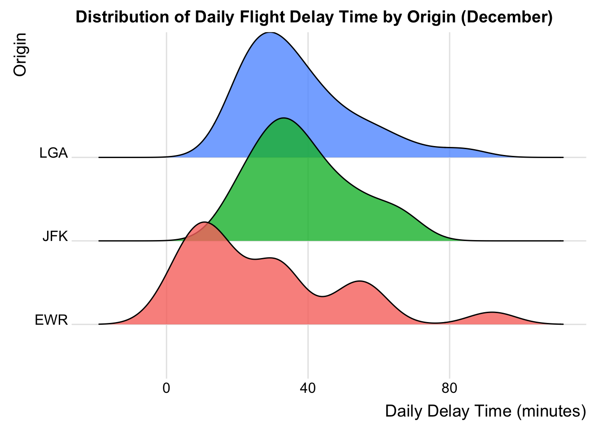
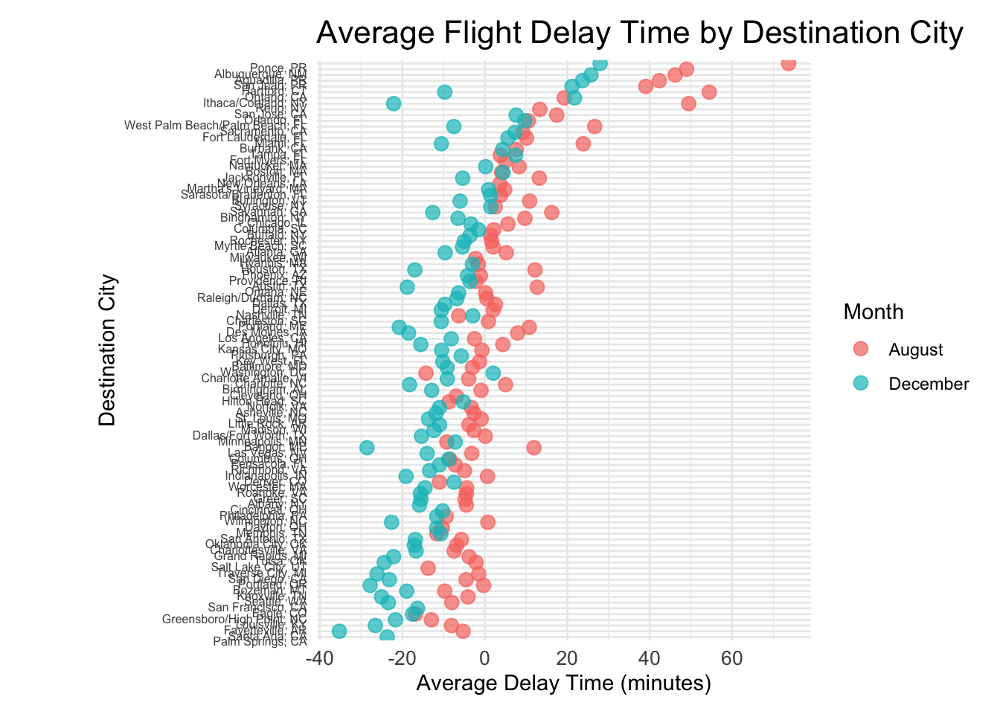
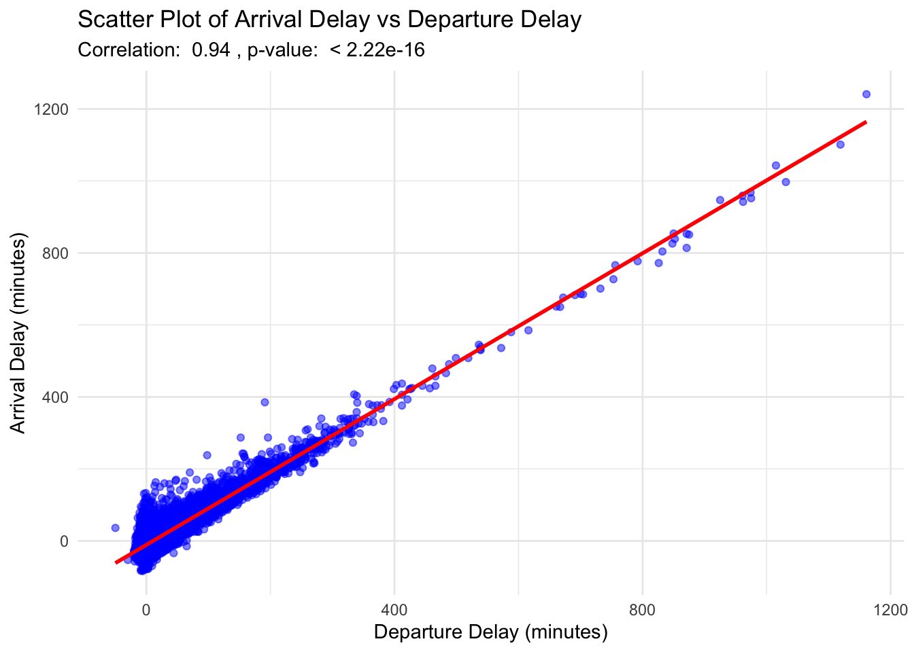

For the questions described in the introduction, we have created ten insightful plots to analyze the topic of delay time comprehensively. To better understand the factors influencing delays, we decided to explore the data from these key perspectives: weather conditions, seasonal differences, and variations across different flight destinations. These perspectives allow us to unveil patterns and correlations and provide a clearer picture of the underlying causes of flight delays. In this project, we mainly focus on three New York airports and flights from these three airports to any other states in the United States.
3.1 Loading Libraries and Data
Code
library(ggplot2)library(dplyr)
Attaching package: 'dplyr'
The following objects are masked from 'package:stats':
filter, lag
The following objects are masked from 'package:base':
intersect, setdiff, setequal, union
Code
library(ggridges)library(GGally)
Registered S3 method overwritten by 'GGally':
method from
+.gg ggplot2
Code
library(ggmosaic)
Attaching package: 'ggmosaic'
The following object is masked from 'package:GGally':
happy
Before we analyze the influence of weather conditions, the first thing to discuss about is which weather conditions may cause the flight delays and their frequencies.
As we can see from the bar chart, there are four types of weathers potential impacting the flight delay: clear-day, cloudy, partly cloudy day, and rain. In both August and December, partly cloudy day is dominate in the frequency of weather conditions. In August, there is no clear day causing flight delay data, so cloudy weather has the least frequency in the weather conditions. In December, the cloudy weather also has the least frequency. As we can see from the plot, EWR airport has the least frequency for both months. The reason is that EWR does not have as much flight data as the other two airports. Based on this plot, we know that there is no clear-day data in August, so we focus on the other three weather conditions and plot the arrival delay time caused by them.
Code
data_flight_202308_weather_delay <- data_flight_202308 |>filter(!is.na(WEATHER_DELAY) & WEATHER_DELAY !=0) |>select(weather, ARR_DELAY)data_flight_202312_weather_delay <- data_flight_202312 |>filter(!is.na(WEATHER_DELAY) & WEATHER_DELAY !=0) |>select(weather, ARR_DELAY)# combine Aug. and Dec. datadata_combined <-bind_rows( data_flight_202308_weather_delay |>mutate(month ="August"), data_flight_202312_weather_delay |>mutate(month ="December"))box_plot <-ggplot(data_combined, aes(x = weather, y = ARR_DELAY, fill = month)) +geom_boxplot(alpha =0.7, outlier.shape =NA) +labs(title ="Distribution of Flight Delay Time by Weather",x ="Weather Condition",y ="Arrival Delay (minutes)",fill ="Month" ) +theme_minimal() +theme(axis.text.x =element_text(angle =45, hjust =1))print(box_plot)

The box plots for these three different weather conditions show us that the cloudy condition has the most variability and biggest difference in the median of arrival delay time between August and December. For the partly cloudy day and rain day, the variability and median are similar for both months. In August, cloudy day had the longest variance of arrival delay time and partly cloudy day had the shortest variance of arrival delay time. In December, cloudy day had the longest variance of arrival delay time and rain day has the shortest variance of arrival delay time. While this plot demonstrates the distribution of flight delay time by different weather conditions, the next plot narrows the focus to the rainy weather condition and examines the relation with the arrival delay time by airport and month.
Warning: There was 1 warning in `mutate()`.
ℹ In argument: `log_delay = log1p(ARR_DELAY)`.
Caused by warning in `log1p()`:
! NaNs produced
Code
data_combined <-bind_rows(data_flight_202308_rain, data_flight_202312_rain)boxplot_rain <-ggplot(data_combined, aes(x = ORIGIN, y = log_delay, fill = month)) +geom_boxplot(alpha =0.7, outlier.shape =NA) +facet_wrap(~month) +labs(title ="Boxplot of Log Arrival Delay by Airline (Rainy Weather)",x ="Airline",y ="Log of Arrival Delay (minutes)",fill ="Month" ) +theme_minimal() +theme(axis.text.x =element_text(angle =45, hjust =1),legend.position ="top" )print(boxplot_rain)
Warning: Removed 9556 rows containing non-finite outside the scale range
(`stat_boxplot()`).

This box plot highlights the variation in the log of arrival delay time at different airports EWR, JKF, and LGA during the rainy weather. In August, JFK exhibits higher median and longer variance compared with the other two airports. In December, JFK also exhibits longer variance compared with the other two airports and the medians are similar for all three airports. While focusing on the relationship between the airports and weather conditions, we try to assume that the flight distance might hugely impact on the delay time. So, the next plot examines the interaction between flight distance and different weather conditions.
Warning: There was 1 warning in `mutate()`.
ℹ In argument: `log_delay = log1p(ARR_DELAY)`.
Caused by warning in `log1p()`:
! NaNs produced
Code
data_combined <-bind_rows(data_flight_202308_processed, data_flight_202312_processed)advanced_plot <-ggplot(data_combined, aes(x = DISTANCE, y = log_delay, color = weather)) +geom_smooth(method ="loess", se =FALSE, size =1) +facet_wrap(~month) +scale_color_manual(values =c("clear-day"="blue", "partly-cloudy-day"="orange", "cloudy"="gray", "rain"="purple", "snow"="red")) +labs(title ="Interaction of Distance and Weather on Flight Delay",x ="Flight Distance (miles)",y ="Log of Arrival Delay (minutes)",color ="Weather Condition" ) +theme_minimal() +theme(axis.text.x =element_text(angle =45, hjust =1), legend.position ="top" )
Warning: Using `size` aesthetic for lines was deprecated in ggplot2 3.4.0.
ℹ Please use `linewidth` instead.
Code
print(advanced_plot)
`geom_smooth()` using formula = 'y ~ x'
Warning: Removed 33756 rows containing non-finite outside the scale range
(`stat_smooth()`).

This curve plot illustrates the relationship between flight distance and the arrival delay time on different weather conditions. In August, the cloudy condition leads to a higher delay time compared with other weather conditions. In December, the rain condition leads to a higher delay time compared with other weather conditions. For shorter flight distance, the arrival delay time tends to change hugely. As the flight distance increases, the differences between each weather condition tend to stabilize.
These four plots in the weather condition part analyze the weather conditions’ impacts on flight delay times. Cloudy and rainy weather causes the longest delay time.
3.3 Seasonal Differences
After analyzing the weather conditions’ impacts on the flight delay, we question if the seasonal differences also play an important role on influencing the flight delay time. We pick August to represent summer and December to represent winter. This section is to investigate how flight delay varies between summer and winter.
Before taking a deeper look at the details of flight delay in August and December, let us have a general idea about the distribution for both months.
Both QQ-plots show that the arrival delay data for August and December is not normally distributed. The right tails for both months are significantly deviated from the diagonal lines. This means the presence of extreme delays. The left tails for both months shows slight deviation from the diagonal line. This means that early arrivals are close to the normal distributions. Overall, August shows heavier right tail than December, which indicates a greater frequency of extreme arrival delays. Now, we have a general expectation about the distributions of the delay time for August and December and a rough idea about different seasons’ impacts on delay time. Let us take a deeper look at comparison between August and December.
Code
data_flight_202308_avg <- data_flight_202308 |>filter(!is.na(ARR_DELAY)) |>group_by(flight_date) |>summarise(avg_delay =mean(ARR_DELAY), .groups ="drop") |>mutate(month ="August", day =as.numeric(format(flight_date, "%d")))data_flight_202312_avg <- data_flight_202312 |>filter(!is.na(ARR_DELAY)) |>group_by(flight_date) |>summarise(avg_delay =mean(ARR_DELAY), .groups ="drop") |>mutate(month ="December", day =as.numeric(format(flight_date, "%d")))data_combined <-bind_rows(data_flight_202308_avg, data_flight_202312_avg)line_graph <-ggplot(data_combined, aes(x = day, y = avg_delay, color = month, group = month)) +geom_line(size =1) +labs(title ="Average Flight Delay Time by Day in August and December",x ="Day of the Month",y ="Average Delay Time (minutes)",color ="Month" ) +theme_minimal() +scale_x_continuous(breaks =seq(1, 31, by =1)) +theme(axis.text.x =element_text(angle =45, hjust =1), legend.position ="top" )print(line_graph)

Both August and December have significant fluctuations in average delay time. In August, the peaks appear around 7th and 13th, which refers to high delay time. It also has minimum between 20th and 23rd, which refers to early arrivals among these days. In December, the peaks are smaller than those in August and appear approximately on 3rd, 11th, and 18th. Also, it has more negative arrival time ranges than August around 6th and 15th. August delay peaks are more extreme than those in December, reaching over 35 minutes. December early arrival peaks are more than those in August, reaching close to 20 minutes. Compared both months’ fluctuations, December delay time is more consistent and fluctuates closer to 0 minutes. August delay time has a broader range with higher peaks. With these information in mind, we suspect that the differences of performances for August and December are due to different departure airports and destinations. We doubt that different departure airports and destinations have preferences which month they would like to have more flights, which potentially cause various fluctuations. Let us first explore three New York departure airports.
`summarise()` has grouped output by 'ORIGIN'. You can override using the
`.groups` argument.
Code
ridgeline_plot_august <-ggplot(data_flight_202308_avg_delay, aes(x = avg_delay, y = ORIGIN, fill = ORIGIN)) +geom_density_ridges(alpha =0.8, scale =1.5) +labs(title ="Distribution of Daily Flight Delay Time by Origin (August)",x ="Daily Delay Time (minutes)",y ="Origin" ) +theme_ridges() +theme(legend.position ="none")data_flight_202312_avg_delay <- data_flight_202312 |>filter(!is.na(ARR_DELAY), ARR_DELAY >=0) |>group_by(ORIGIN, flight_date) |>summarise(avg_delay =mean(ARR_DELAY)) |>ungroup()
`summarise()` has grouped output by 'ORIGIN'. You can override using the
`.groups` argument.
Code
ridgeline_plot_december <-ggplot(data_flight_202312_avg_delay, aes(x = avg_delay, y = ORIGIN, fill = ORIGIN)) +geom_density_ridges(alpha =0.8, scale =1.5) +labs(title ="Distribution of Daily Flight Delay Time by Origin (December)",x ="Daily Delay Time (minutes)",y ="Origin" ) +theme_ridges() +theme(legend.position ="none")print(ridgeline_plot_august)
Picking joint bandwidth of 5.95

Code
print(ridgeline_plot_december)
Picking joint bandwidth of 6.69

In August, LGA airport is centered around 40 minutes, JFK airport is centered around 50 minutes, and EWR airport is centered around 20 minutes. They all have a long tail for extreme delay times. In December, LGA airport is centered around 30 minutes, JFK airport is centered around 35 minutes, and EWR airport is centered aournd 10 minutes. The variability is reduced and the distribution has fewer extreme delays for all three airports. In both months, JFK airport always has the highest average delay time and EWR airport always has the lowest average delay time. Since JFK airport has a higher average delay time in August, it means that this airport handled more flights during summer. People may prefer to choose take flights at JFK airport for summer travel. Compared both months, smaller variability and lower average delay times in December reflect reduced demand on flights since August is a busier traveling season. Let us next explore different destination cities.
Code
data_flight_202308_avg <- data_flight_202308 |>filter(!is.na(ARR_DELAY)) |>group_by(DEST_CITY_NAME) |>summarise(avg_delay =mean(ARR_DELAY), .groups ="drop") |>mutate(month ="August")data_flight_202312_avg <- data_flight_202312 |>filter(!is.na(ARR_DELAY)) |>group_by(DEST_CITY_NAME) |>summarise(avg_delay =mean(ARR_DELAY), .groups ="drop") |>mutate(month ="December")data_combined <-bind_rows(data_flight_202308_avg, data_flight_202312_avg)cleveland_dot_plot <-ggplot(data_combined, aes(x = avg_delay, y =reorder(DEST_CITY_NAME, avg_delay), color = month)) +geom_point(size =3, alpha =0.7) +labs(title ="Average Flight Delay Time by Destination City",x ="Average Delay Time (minutes)",y ="Destination City",color ="Month" ) +theme_minimal() +theme(axis.text.y =element_text(size =6, angle =0, hjust =1, vjust =1),axis.text.x =element_text(size =10),plot.title =element_text(size =16),plot.margin =margin(t =10, r =10, b =10, l =50) )print(cleveland_dot_plot)

Overall, for many destination cities, August shows higher average delay time than December. This suggests that August experiences higher flight demands and those lead to increasing flight delay. Besides that, December shows many negative average delays with many blue points below zero. It is possible that flights in December are less than in August, so lower demand makes it better flight performances. For the overall performances, many destination cities present more delays in August, while December has less delays and more early arrivals. So, different destination cities may experience seasonal preferences for flights.
In conclusion, from four different kinds of plots above, August flights tend to have longer delay time compared with those in December, no matter the departure airports and the destination cities.
3.4 Other
After exploring weather conditions and seasonal differences, we want to find out if there are correlations between factors of analyzing the flight delays. So, we plot scatterplot matrix to investigate pairwise relationships among key variables and identify potential correlations contributing to flight delays.
Through this scatterplot matrix, there is a strong correlation between arrival delay time and departure delay time since there is a clear upward trend in the scatterplot. This is reasonable because departure delays always cause arrival delays. Besides that, the scatterplot for weather encoding represents that the relationship is categorical rather than linear. For the scatterplot between distance and arrival/departure delays, shorter distance flights tend to cluster at lower delay times. This indicates that short distance flights tend to experience long delays. There are gaps between longer and shorter distances. The scatterplot between distance and destination city encoding shows clear clusters, which means that some destination cities have similar distances from the departure airports. Overall, only arrival and departure delays show a strong correlation. So, we continue focusing on this correlation and ignore other variables.
scatter_plot <-ggplot(data_flight_filtered, aes(x = DEP_DELAY, y = ARR_DELAY)) +geom_point(alpha =0.5, color ="blue") +geom_smooth(method ="lm", color ="red", se =TRUE) +labs(title ="Scatter Plot of Arrival Delay vs Departure Delay",subtitle =paste("Correlation: ", round(correlation_test$estimate, 2),", p-value: ", format.pval(correlation_test$p.value)),x ="Departure Delay (minutes)",y ="Arrival Delay (minutes)" ) +theme_minimal()print(scatter_plot)
`geom_smooth()` using formula = 'y ~ x'

With the calculated data, the correlation coefficient r = 0.94 indicates a strong positive correlation between arrival and departure delay times. This suggests that as departure delays increase, it is possible for arrival delays to increase, which is logically reasonable. The p-value is too small to show a number, so this indicates that the p-value is significantly small. This correlation is statistically significant. This scatterplot between arrival and departure delays represents a linear fit since data points are closely following the red line. A few blue points are outliers shown in the plot. They are potentially caused by other additional factors. So, departure delays can be a determined factor to contribute to the arrival delays. If the flight companies want to address the arrival delays, they should focus on fixing the issue of departure delays first.
Both the scatterplot matrix and the scatterplot highlights the strong positive correlation of arrival and departure delays. This suggests that the inefficiencies at departure are the main factor of arrival delays. Departure delays cooperate with other factors, such as weather conditions and seasons, to contribute to the overall flight delays.